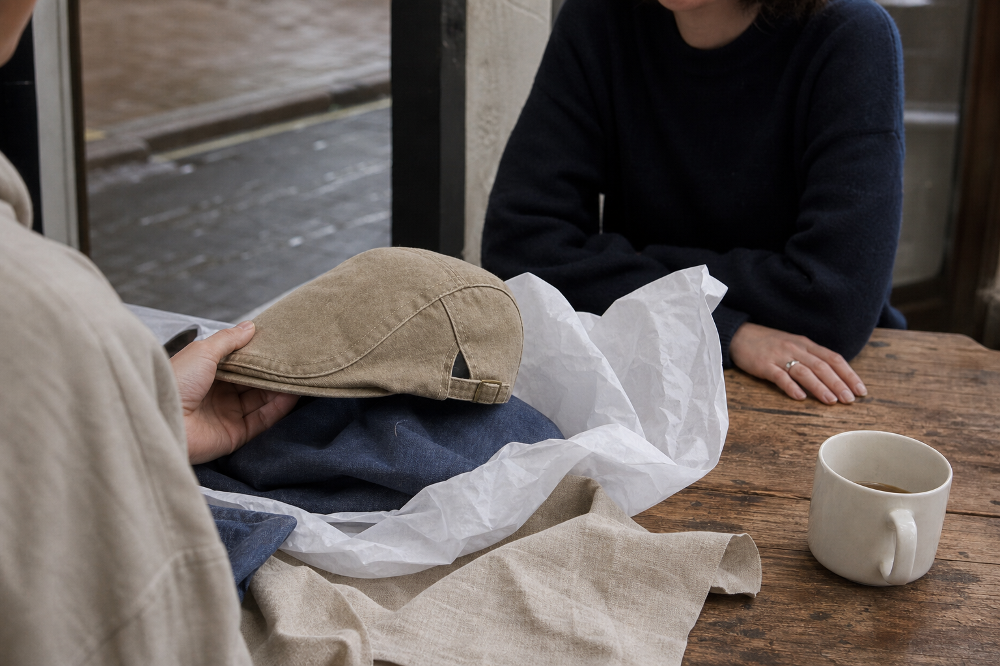
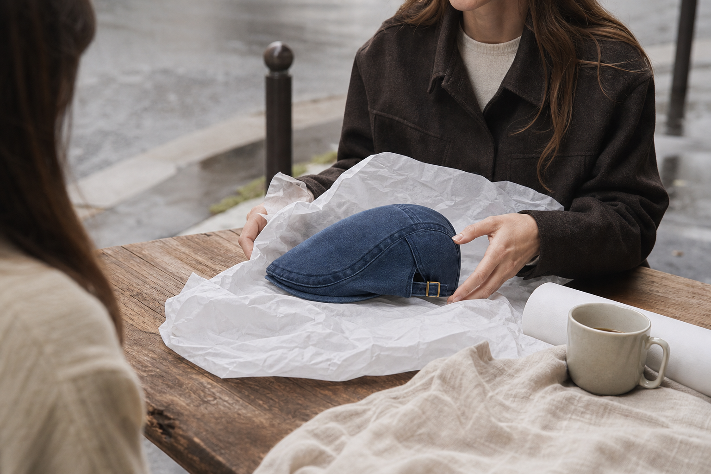
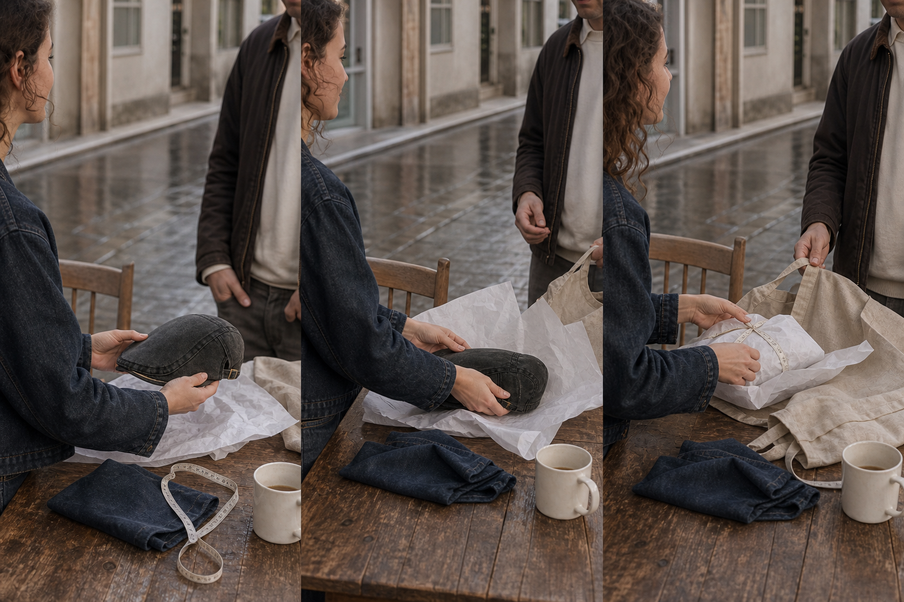

For the person buying it for him
"Fit" Is Not A Guess. It's A Number You Can Take.
Buying a flat cap for a man whose head you've never measured is not a gamble. It's an unfinished measurement.
Look the word up and it says nothing about luck. Fit is a correspondence: a number on one side, a shell built to absorb what the number can't cover on the other. Everyone buying a hat for someone else uses the word as if it meant hoping.
So let's take it apart properly. Ask people what stops them ordering online and one answer dominates. Ask why a cap gets thrown out and it's rarely the colour.
The cap has a soft shell that follows the skull instead of resisting it, and a side-adjuster that closes the last gap. That's half the answer. The other half is a tape measure, and it takes about ten seconds.
100-Day Fit Guarantee: it sits right, or your money back.
30.000+ Satisfied Customers. Free Worldwide Shipping. 100 Days To Change Your Mind.
None of this proves the cap will fit him. That comes later, with a tape measure.
It does mean the worst case is bounded: 30.000+ people have ordered before you, shipping costs nothing anywhere in the world, and you have 100 days to decide it was a mistake.
So read the rest without your hand on the wallet.
The anomaly
The Gift Came Back. The Gift Wasn't Wrong.
She chose well. She was still the one at the post office counter.
She knew what he'd like. She didn't know his head measurement, and she couldn't ask without giving away the surprise. So she guessed.
He put it on in the hallway. Two seconds in front of the mirror, then the sentence that ends it: "It's lovely, but it's a bit tight." Nothing about the taste was wrong. One centimetre was.
Then the second gift begins, the one nobody wraps. The printed return slip, the packaging she'd already thrown out, the size exchange she handles instead of him. And the quiet decision taken somewhere between the counter and the car: next year, something safer. Something duller. Something with no size on it at all.
- The measurement she never hadNo tape measure, no number, no way to ask.
- The return she inheritedThe recipient wears the gift. The giver handles the parcel.
- The retreatOne failed exchange is enough to make the safe gift look like the sensible one.
Ask People What Stops Them Buying Online, And They Say The Same Word
One returned gift is a story. Thousands of them is a pattern, and when we asked our customers what holds them back online, more than half named the same thing: the size.
Seeing the material comes second, at 29%. Handling the return comes third, at 14%. So the fear you had before ordering was not irrational, it was the majority position, and it was ranked exactly where you would have put it.
The last figure is the one that decides where this investigation goes. Nearly one cap in five is thrown away for scratching or squeezing. Not for going out of fashion. For not fitting. Which means size is not the risk around the gift. It is the gift.
The method
A Tape Measure, Just Above The Ears. Measure Twice.
You don't have to ask him. You have to measure him once, properly, while he's sitting down.
A tailor's tape, flat around the head, just above the ears and across the middle of the forehead. Don't pull it tight. Measure twice.
That gives you a number in centimetres, and the number gives you a size:
- S: 54 to 55 cm
- M: 56 to 57 cm
- L: 58 to 59 cm
- XL: 60 to 61 cm
Between two sizes, take the smaller one. The denim gives a little as it's worn, never the other way round. Thick hair or a heavy cut is the one exception: go up.
That's the whole method. Not a guess, not an average head, not a coin flip between two boxes on a chart. A number you took yourself, twice, and a rule for the one case where the number lands between the lines.
100-Day Fit Guarantee: it sits right, or your money back.
The limit we name
Above 61 cm, Write To Us Before You Order
The one case where we would rather not take your money today.
On 11 March 2026 a customer called about an XL he had just received. It sat tight. We asked for his measurement: 61, maybe 61 and a half. Our chart runs XL to 61 cm, so on paper he was inside it. The adviser told him the truth anyway: at that number it stays snug, and sending back the same cap would only mean a second return for him to handle.
We kept that as a rule instead of burying it. If the tape says 61 cm or more, write to us at help@ashcroft-flatcaps.com before you order. We would rather answer one email than have you pack a parcel in January.
Below that number, the chart holds and the side-adjuster closes the last gap. Above it, we will tell you plainly, and you keep your money for a gift that fits.
He measures 61 cm. Do I just take the XL?
Our chart shows XL up to 61 cm, and we publish it as it stands. But one customer at 61 to 61.5 cm found it tight, so at that figure we ask you to write first rather than guess for him.
Isn't it odd for you to talk me out of a sale?
A cap that comes back twice costs us more than the order was worth, and it costs you the return you would have handled. Saying it early is cheaper for both of us.
And if I write, will I lose time?
Nothing is running out. But a dated gift is worth ordering early, and the email you send today is faster than an exchange in three weeks.
Where the fabric comes from
The Shrink Already Happened. At The Mill, Before Anyone Cut It.
Washed in the piece, then cut. That order matters more than anything you'll read about fit.
Raw denim does three things after the first home wash: it goes stiff, it shrinks, it goes slack. Which is why a cap ordered sight-unseen so often fits in December and not in March.
Ours is washed in the piece, before the pattern touches it. The shrink is behind it. The hand is soft on the first wear, not on the fortieth, and one customer put it plainly on record: "Le denim est souple des le premier jour." A shell that was born soft follows the skull instead of arguing with it.
For you, the giver, that turns into one plain sentence. The size you take with a tape measure today is the size he wears next winter. Nothing moves after the parcel is opened, so the decision you make now is a decision you only make once.

The hardware
One Cut. A Side-Adjuster. Set It Once And It Stays Put.
The shell follows his skull instead of gripping it, and the adjuster closes whatever centimetres are left.
There is only one cut. It was drawn to sit low and follow the face, and the shell is soft enough to take the shape of the head underneath rather than argue with it. That is why the number you took above the ears does not have to be perfect.
The side-adjuster does the rest. He sets it once, on the first outing, and it stays where he put it. Nothing to re-tighten, nothing to explain in a note, nothing for him to send back because half a centimetre went the wrong way.
This is the same cut that has been ordered sight-unseen by givers who never asked the man his size, across every wash in the collection.
- One cut, made to fitA single shape, sized to close the gap rather than to guess it.
- Tan suede trimThe one detail that reads as considered when he opens the box.
- Set it onceImpossible to get the size wrong once the adjuster is where he likes it.

On record
She Measured Him Without Asking. There Was Nothing To Send Back.
Two orders placed sight-unseen, two sizes that stayed. Neither buyer knew his head measurement before picking up the tape.
Both of these were bought as gifts, by people who expected to handle a size exchange and never did. One took the measurement herself with a tape measure, followed the guide, and the number held. The other ordered an L on the chart alone, worried the whole time, and logged no return.
That is the part worth reading twice. Not that the caps were liked, but that nothing came back. The tape did its work before the parcel ever shipped.
Je l'ai offerte a mon mari sans connaitre son tour de tete. J'ai mesure avec un metre de couturiere en suivant le guide, ca tombait juste. Je m'attendais a devoir gerer un echange, il n'y en a pas eu besoin.
Helene P., 41 - illustrative customer verbatim
Offerte a mon mari. Il ne la quitte plus. J'avais peur pour la taille, le guide etait juste.
Verified review "Cadeau reussi", 03/03/2026 - size L ordered, no return
The handover
Let Him Try It Outside, Not In The Hallway Mirror
A cap is judged in daylight, on a street, after ten minutes on a head. Not in three seconds in front of a mirror.
You measured him without asking. The number is taken, the rule is known. There is one thing left to get right, and it happens after he opens the box.
Don't let him decide in the hallway. A mirror shows him a new object on his head, and a new object always looks like a costume for the first thirty seconds. Send him out with it instead. Round the corner, down the street, coffee and back. The shell was born soft, it settles above the ears, and by the time he comes back it has stopped being an object and started following him.
The one instruction worth passing on
Hand wash, cold water, mild soap. Press, never wring. Dry flat on a form or an upturned bowl. Never a tumble dryer: that is what deforms the shell for good, and the only thing that can still move the size after the mill has already done its work.
- First outing, allowedTen minutes outside beats ten seconds in a mirror. The cap is judged once it has been worn, not once it has been seen.
- Cold water, by handMild soap, press without wringing, dry flat on a form. Nothing here changes the size you chose.
- Never the dryerHigh heat and tumble drying are the one thing that deforms the shell irreversibly. Skip them and the fit stays honest.
100-Day Fit Guarantee: it sits right, or your money back.

The cost of changing nothing
The Safe Gift Costs More Than This One
Counted across seasons, not per item.
The duller gift is not free. It is the one bought because a size felt like a coin flip, and it is the one nobody remembers by February. That is the real price of playing safe: a gift that cost you something and did nothing.
The cheap cap costs more twice over. Its lining is glued, and glue lets go in the heat, blistering across the forehead. Its sizes were invented rather than measured. It gets thrown out for scratching or squeezing, and another one replaces it, and another.
Ours is $29.99 with free worldwide shipping. The shell was born soft and follows the skull instead of gripping it, so the number you take today is still the number next winter. Nothing here is running out. Nothing improves on its own either.
| The Washed Denim Collection | Alternative | |
|---|---|---|
| Sizing | A tape measure above the ears, and the smaller of the two when he falls between | Invented sizes, guessed sight-unseen |
| Lining | Sewn in, panel by panel | Glued, and glue blisters in the heat |
| After the first wash | Washed in the piece, so the shrink already happened | Stiff, then shrinks, then goes slack |
| Cost across a year | One cap, still worn | Three caps, thrown out for scratching or squeezing |
The terms, in writing
It Sits Right, Or Your Money Back. 100 Days.
The backstop behind the number you took above his ears.
One hundred days from the day it arrives. If it doesn't sit right on him, you get your money back. Not store credit, not a swap you have to argue for.
A size exchange during the return period is the request we handle most often, and it's handled by us, not by him.
Shipping is free worldwide, no minimum. Payment is encrypted and we don't store your card details. And if his measurement lands at 61 cm or above, the same address answers around the clock, seven days a week: help@ashcroft-flatcaps.com.
- 100-Day Fit GuaranteeIt sits right, or your money back.
- Free worldwide shippingOn all orders, with no minimum purchase.
- Secure paymentsTransactions encrypted, payment details never stored.
- 24/7 supporthelp@ashcroft-flatcaps.com, around the clock, seven days a week.
100-Day Fit Guarantee: it sits right, or your money back.
Before you order
What You'd Ask Us On The Phone Before Ordering For Him
The four questions the giver asks, answered the way we answer them at the desk.
Nothing new here. Just the procedure, in the order it comes up: the rule when the tape lands between two lines, the fallback if it misses, the timing, and the one man this cap is wrong for.
His measurement falls between two sizes. Which one?
The smaller of the two. The denim relaxes slightly with wear, never the other way round.
And if it still doesn't suit him?
A size exchange during the return period. It's the request we handle most, and it's the one we treat first.
Will it be there for the date?
Shipping is free worldwide, with no minimum. We won't promise you a date, so if the gift is a dated one, order early rather than close.
Is it a cap he can cycle in?
No. This isn't a sports cap. It doesn't cover the forehead like a long-peak cap and it won't stay put on a moving bike. If that's what he needs, it's the wrong product, and we'd rather say so now.
The last decision
Now There's Only The Colour Left To Decide
The number is taken. The rule is known. The limit is stated.
Everything that could have gone wrong has already been dealt with above: the tape above his ears, the smaller of the two when he falls between sizes, and the one case where we ask you to write to us first.
What's left isn't a risk. It's nine washes, from an everyday light blue to a burgundy that isn't afraid of colour. Choose the one that already looks like him.
Nothing here is running out. But the tape measure won't pick itself up.
100-Day Fit Guarantee: it sits right, or your money back. Free worldwide shipping.